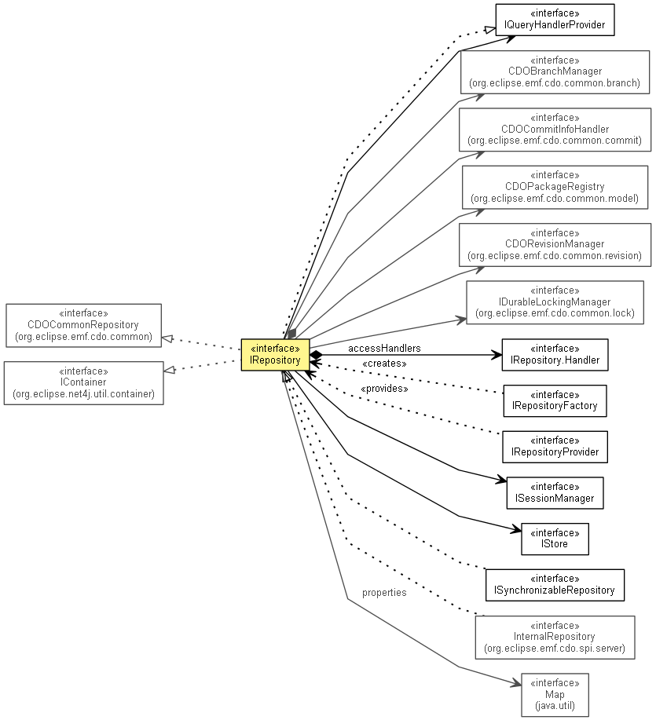

org.eclipse.emf.cdo.server
Interface IRepository
- All Superinterfaces:
- CDOCommonRepository, CDOTimeProvider, IAdaptable, IContainer<Object>, ILifecycle, INotifier, IQueryHandlerProvider
- All Known Subinterfaces:
- InternalFailoverParticipant, InternalRepository, InternalSynchronizableRepository, ISynchronizableRepository
- public interface IRepository
- extends CDOCommonRepository, IQueryHandlerProvider, IContainer<Object>, ILifecycle

A CDO repository.
- No Implement
- This interface is not intended to be implemented by clients.
- No Extend
- This interface is not intended to be extended by clients.
| Methods inherited from interface org.eclipse.emf.cdo.common.CDOCommonRepository |
getCreationTime, getIDGenerationLocation, getName, getObjectIDTypes, getRootResourceID, getState, getStoreType, getType, getUUID, isEnsuringReferentialIntegrity, isSerializingCommits, isSupportingAudits, isSupportingBranches, isSupportingEcore, waitWhileInitial |
SYSTEM_USER_ID
static final String SYSTEM_USER_ID
- Since:
- 3.0
- See Also:
- Constant Field Values
getStore
IStore getStore()
getProperties
Map<String,String> getProperties()
getPackageRegistry
CDOPackageRegistry getPackageRegistry()
- Returns the EMF
package registry that is used by this repository.
- Since:
- 2.0
getBranchManager
CDOBranchManager getBranchManager()
- Since:
- 3.0
getRevisionManager
CDORevisionManager getRevisionManager()
- Since:
- 3.0
getCommitInfoManager
CDOCommitInfoManager getCommitInfoManager()
- Since:
- 4.2
getSessionManager
ISessionManager getSessionManager()
getLockManager
@Deprecated
IDurableLockingManager getLockManager()
- Deprecated. As of 4.1 use
getLockingManager().
- Since:
- 4.0
getLockingManager
ILockingManager getLockingManager()
- Since:
- 4.1
getQueryHandlerProvider
IQueryHandlerProvider getQueryHandlerProvider()
- Since:
- 2.0
getLastCommitTimeStamp
long getLastCommitTimeStamp()
- Returns the time stamp of the last commit operation.
- Since:
- 3.0
waitForCommit
long waitForCommit(long timeout)
- Blocks the calling thread until the next commit operation has succeeded and returns the last (highest) commit time
stamp.
- Since:
- 3.0
validateTimeStamp
void validateTimeStamp(long timeStamp)
throws IllegalArgumentException
- Validates the given timeStamp against the repository time.
- Throws:
IllegalArgumentException - if the given timeStamp is less than the repository creation time or greater than the current repository
time.- Since:
- 2.0
getCommitInfoHandlers
@Deprecated
CDOCommitInfoHandler[] getCommitInfoHandlers()
- Deprecated. As of 4.2 call
CDOCommitInfoProvider.getCommitInfoHandlers()
- Since:
- 4.1
addCommitInfoHandler
@Deprecated
void addCommitInfoHandler(CDOCommitInfoHandler handler)
- Deprecated. As of 4.2 call
CDOCommitInfoProvider.addCommitInfoHandler(CDOCommitInfoHandler)
- Since:
- 4.0
removeCommitInfoHandler
@Deprecated
void removeCommitInfoHandler(CDOCommitInfoHandler handler)
- Deprecated. As of 4.2 call
CDOCommitInfoProvider.removeCommitInfoHandler(CDOCommitInfoHandler)
- Since:
- 4.0
getHandlers
Set<IRepository.Handler> getHandlers()
- Since:
- 4.1
addHandler
void addHandler(IRepository.Handler handler)
- Since:
- 2.0
removeHandler
void removeHandler(IRepository.Handler handler)
- Since:
- 2.0
setInitialPackages
void setInitialPackages(EPackage... initialPackages)
- Since:
- 4.0
Copyright (c) 2011, 2012 Eike Stepper (Berlin, Germany) and others.